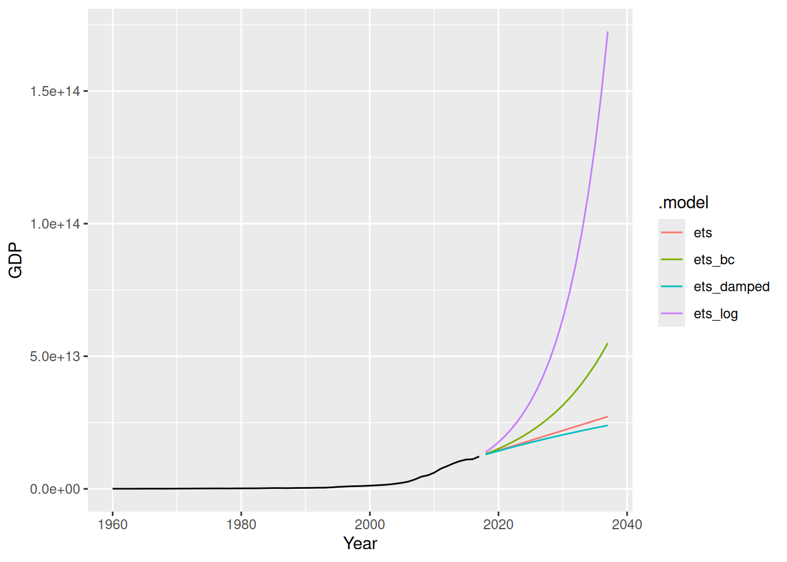

library(fpp3)Exercise Week 6: Solutions
fpp3 8.8, Ex1
Consider the the number of pigs slaughtered in Victoria, available in the
aus_livestockdataset.
- Use the
ETS()function in R to estimate the equivalent model for simple exponential smoothing. Find the optimal values of \alpha and \ell_0, and generate forecasts for the next four months.
fit <- aus_livestock |>
filter(Animal == "Pigs", State == "Victoria") |>
model(ses = ETS(Count ~ error("A") + trend("N") + season("N")))
report(fit)Series: Count
Model: ETS(A,N,N)
Smoothing parameters:
alpha = 0.3221247
Initial states:
l[0]
100646.6
sigma^2: 87480760
AIC AICc BIC
13737.10 13737.14 13750.07 Optimal values are \alpha = 0.3221247 and \ell_0 = 100646.6
fc <- fit |> forecast(h = "4 months")
fc# A fable: 4 x 6 [1M]
# Key: Animal, State, .model [1]
Animal State .model Month
<fct> <fct> <chr> <mth>
1 Pigs Victoria ses 2019 Jan
2 Pigs Victoria ses 2019 Feb
3 Pigs Victoria ses 2019 Mar
4 Pigs Victoria ses 2019 Apr
# ℹ 2 more variables: Count <dist>, .mean <dbl>fc |>
autoplot(filter(aus_livestock, Month >= yearmonth("2010 Jan")))
- Compute a 95% prediction interval for the first forecast using \hat{y} \pm 1.96s where s is the standard deviation of the residuals. Compare your interval with the interval produced by R.
s <- augment(fit) |>
pull(.resid) |>
sd()
yhat <- fc |>
pull(.mean) |>
head(1)
yhat + c(-1, 1) * 1.96 * s[1] 76871.01 113502.10fc |>
head(1) |>
mutate(interval = hilo(Count, 95)) |>
pull(interval)<hilo[1]>
[1] [76854.79, 113518.3]95The intervals are close but not identical. This is because R estimates the variance of the residuals differently, taking account of the degrees of freedom properly (and also using a more accurate critical value rather than just 1.96).
Try the following.
res <- augment(fit) |> pull(.resid)
s <- sqrt(sum(res^2) / (length(res) - NROW(tidy(fit))))
yhat + c(-1, 1) * qnorm(0.975) * s[1] 76854.79 113518.33fpp3 8.8, Ex2
Write your own function to implement simple exponential smoothing. The function should take arguments
y(the response data),alpha(the smoothing parameter \alpha) andlevel(the initial level \ell_0). It should return the forecast of the next observation in the series. Does it give the same forecast asETS()?
my_ses <- function(y, alpha, level) {
yhat <- numeric(length(y) + 1)
yhat[1] <- level
for (i in 2:(length(yhat))) {
yhat[i] <- alpha * y[i - 1] + (1 - alpha) * yhat[i - 1]
}
return(last(yhat))
}
vic_pigs_vec <- aus_livestock |>
filter(Animal == "Pigs", State == "Victoria") |>
pull(Count)
ses_fc <- vic_pigs_vec |>
my_ses(alpha = 0.3221, level = 100646.6)
c(my_ses = ses_fc, fable = fc$.mean[1]) my_ses fable
95186.59 95186.56 Yes, the same forecasts are obtained. The slight differences are due to rounding of \alpha and \ell_0.
fpp3 8.8, Ex3
Modify your function from the previous exercise to return the sum of squared errors rather than the forecast of the next observation. Then use the
optim()function to find the optimal values of \alpha and \ell_0. Do you get the same values as theETS()function?
my_ses_sse <- function(par, y) {
alpha <- par[1]
level <- par[2]
n <- length(y)
yhat <- numeric(n)
yhat[1] <- level
for (i in 2:n) {
yhat[i] <- alpha * y[i - 1] + (1 - alpha) * yhat[i - 1]
}
return(sum((y - yhat)^2))
}
optim(c(0.1, vic_pigs_vec[1]), my_ses_sse, y = vic_pigs_vec)$par[1] 3.220344e-01 1.005254e+05tidy(fit)# A tibble: 2 × 5
Animal State .model term estimate
<fct> <fct> <chr> <chr> <dbl>
1 Pigs Victoria ses alpha 0.322
2 Pigs Victoria ses l[0] 100647. Similar, but not identical estimates. This is due to different starting values being used.
fpp3 8.8, Ex4
Combine your previous two functions to produce a function that both finds the optimal values of \alpha and \ell_0, and produces a forecast of the next observation in the series.
my_ses <- function(y) {
par <- optim(c(0.1, y[1]), my_ses_sse, y = y)$par
alpha <- par[1]
level <- par[2]
yhat <- numeric(length(y) + 1)
yhat[1] <- level
for (i in 2:(length(yhat))) {
yhat[i] <- alpha * y[i - 1] + (1 - alpha) * yhat[i - 1]
}
return(last(yhat))
}
my_ses(vic_pigs_vec)[1] 95186.69fpp3 8.8, Ex5
Data set
global_economycontains the annual Exports from many countries. Select one country to analyse.
- Plot the Exports series and discuss the main features of the data.
global_economy |>
filter(Country == "Argentina") |>
autoplot(Exports)There is a huge jump in Exports in 2002, due to the deregulation of the Argentinian peso. Since then, Exports (as a percentage of GDP) has gradually returned to 1990 levels.
- Use an ETS(A,N,N) model to forecast the series, and plot the forecasts.
etsANN <- global_economy |>
filter(Country == "Argentina") |>
model(ETS(Exports ~ error("A") + trend("N") + season("N")))
etsANN |>
forecast(h = 10) |>
autoplot(global_economy)
- Compute the RMSE values for the training data.
accuracy(etsANN) |> select(RMSE)# A tibble: 1 × 1
RMSE
<dbl>
1 2.78
- Compare the results to those from an ETS(A,A,N) model. (Remember that the trended model is using one more parameter than the simpler model.) Discuss the merits of the two forecasting methods for this data set.
fit <- global_economy |>
filter(Country == "Argentina") |>
model(
ses = ETS(Exports ~ error("A") + trend("N") + season("N")),
holt = ETS(Exports ~ error("A") + trend("A") + season("N"))
)
accuracy(fit)# A tibble: 2 × 11
Country .model .type ME RMSE MAE MPE MAPE MASE RMSSE ACF1
<fct> <chr> <chr> <dbl> <dbl> <dbl> <dbl> <dbl> <dbl> <dbl> <dbl>
1 Argentina ses Training 0.0762 2.78 1.62 -1.73 15.7 0.983 0.986 0.00902
2 Argentina holt Training 0.00795 2.78 1.64 -2.51 15.9 0.994 0.986 0.0271 There is very little difference in training RMSE between these models. So the extra parameter is not doing much.
- Compare the forecasts from both methods. Which do you think is best?
fit |>
forecast(h = 10) |>
autoplot(global_economy)- The forecasts are similar. In this case, the simpler model is preferred.
- Calculate a 95% prediction interval for the first forecast for each series, using the RMSE values and assuming normal errors. Compare your intervals with those produced using R.
- standard error. (from RMSE)
- mean (from forecast)
s <- accuracy(fit) |> pull(RMSE)
yhat <- forecast(fit, h = 1) |> pull(.mean)
# SES
yhat[1] + c(-1, 1) * qnorm(0.975) * s[1][1] 5.882074 16.764136# Holt
yhat[2] + c(-1, 1) * qnorm(0.975) * s[2][1] 5.989515 16.872908fit |>
forecast(h = 1) |>
mutate(PI = hilo(Exports, level = 95))# A fable: 2 x 6 [1Y]
# Key: Country, .model [2]
Country .model Year
<fct> <chr> <dbl>
1 Argentina ses 2018
2 Argentina holt 2018
# ℹ 3 more variables: Exports <dist>, .mean <dbl>, PI <hilo>Using RMSE yields narrower prediction interval while using the values from
hilo()function gives wider prediction interval.Using RMSE has failed to take account of the degrees of freedom for each model. Compare the following
sse <- augment(fit) |>
as_tibble() |>
group_by(.model) |>
summarise(s = sum(.resid^2)) |>
pull(s)
n <- global_economy |>
filter(Country == "Argentina") |>
nrow()
# sse method= alpha, level=> 2
# holt linear = alpha, level, trend, b => 4
s <- sqrt(sse / (n - c(2, 4)))
# SES
yhat[1] + c(-1, 1) * qnorm(0.975) * s[1][1] 5.785088 16.861122# Holt
yhat[2] + c(-1, 1) * qnorm(0.975) * s[2][1] 5.79226 17.07016fpp3 8.8, Ex6
Forecast the Chinese GDP from the
global_economydata set using an ETS model. Experiment with the various options in theETS()function to see how much the forecasts change with damped trend, or with a Box-Cox transformation. Try to develop an intuition of what each is doing to the forecasts.
[Hint: use
h=20when forecasting, so you can clearly see the differences between the various options when plotting the forecasts.]
china <- global_economy |>
filter(Country == "China")
china |> autoplot(GDP)- It clearly needs a relatively strong transformation due to the increasing variance.
china |> autoplot(box_cox(GDP, 0.2))
china |> features(GDP, guerrero)# A tibble: 1 × 2
Country lambda_guerrero
<fct> <dbl>
1 China -0.0345Making \lambda=0.2 looks ok.
The Guerrero method suggests an even stronger transformation. Let’s also try a log.
fit <- china |>
model(
ets = ETS(GDP),
ets_damped = ETS(GDP ~ trend("Ad")),
ets_bc = ETS(box_cox(GDP, 0.2)),
ets_log = ETS(log(GDP))
)
fit# A mable: 1 x 5
# Key: Country [1]
Country ets ets_damped ets_bc ets_log
<fct> <model> <model> <model> <model>
1 China <ETS(M,A,N)> <ETS(M,Ad,N)> <ETS(A,A,N)> <ETS(A,A,N)>augment(fit)# A tsibble: 232 x 7 [1Y]
# Key: Country, .model [4]
Country .model Year GDP .fitted .resid .innov
<fct> <chr> <dbl> <dbl> <dbl> <dbl> <dbl>
1 China ets 1960 59716467625. 49001691297. 10714776328. 0.219
2 China ets 1961 50056868958. 66346643194. -16289774236. -0.246
3 China ets 1962 47209359006. 51607368186. -4398009180. -0.0852
4 China ets 1963 50706799903. 47386494407. 3320305495. 0.0701
5 China ets 1964 59708343489. 51919091574. 7789251914. 0.150
6 China ets 1965 70436266147. 63350421234. 7085844913. 0.112
7 China ets 1966 76720285970. 76289186599. 431099371. 0.00565
8 China ets 1967 72881631327. 82708375812. -9826744486. -0.119
9 China ets 1968 70846535056. 75804820984. -4958285928. -0.0654
10 China ets 1969 79705906247. 72222259470. 7483646777. 0.104
# ℹ 222 more rowsfit |>
forecast(h = "20 years") |>
autoplot(china, level = NULL)
- The transformations have a big effect, with small lambda values creating big increases in the forecasts.
- The damping has relatively a small effect.
fpp3 8.8, Ex16
Show that the forecast variance for an ETS(A,N,N) model is given by \sigma^2\left[1+\alpha^2(h-1)\right].
An ETS(A,N,N) model is defined as \begin{align*} y_t & = \ell_{t-1} + \varepsilon_{t} \\ \ell_{t} & = \ell_{t-1} + \alpha\varepsilon_{t}, \end{align*} where \varepsilon_t \sim \text{N}(0,\sigma^2), and h-step forecasts are given by \hat{y}_{T+h|T} = \ell_T. So \begin{align*} y_{T+h} & = \ell_{T+h-1} + \varepsilon_{T+h} \\ & = \ell_{T+h-2} + \alpha \varepsilon_{T+h-1} + \varepsilon_{T+h} \\ & = \ell_{T+h-3} + \alpha \varepsilon_{T+h-2} + \alpha \varepsilon_{T+h-1} + \varepsilon_{T+h} \\ & \dots \\ & = \ell_{T} + \alpha \sum_{j=1}^{h-1} \varepsilon_{T+h-j} + \varepsilon_{T+h}. \end{align*} Therefore \begin{align*} \text{Var}(y_{T+h} | y_1,\dots,y_T) & = \alpha^2 \sum_{j=1}^{h-1} \sigma^2 + \sigma^2 \\ & = \sigma^2\left[ 1 + \alpha^2 (h-1)\right ]. \end{align*}
fpp3 8.8, Ex17
Write down 95% prediction intervals for an ETS(A,N,N) model as a function of \ell_T, \alpha, h and \sigma, assuming normally distributed errors.
Using previous result: \ell_T \pm 1.96 \sigma \sqrt{ 1 + \alpha^2 (h-1)}